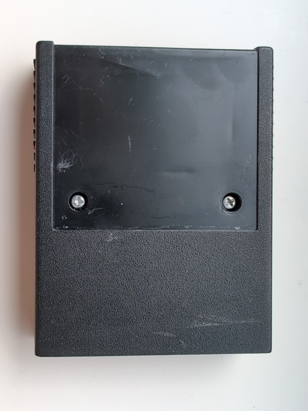
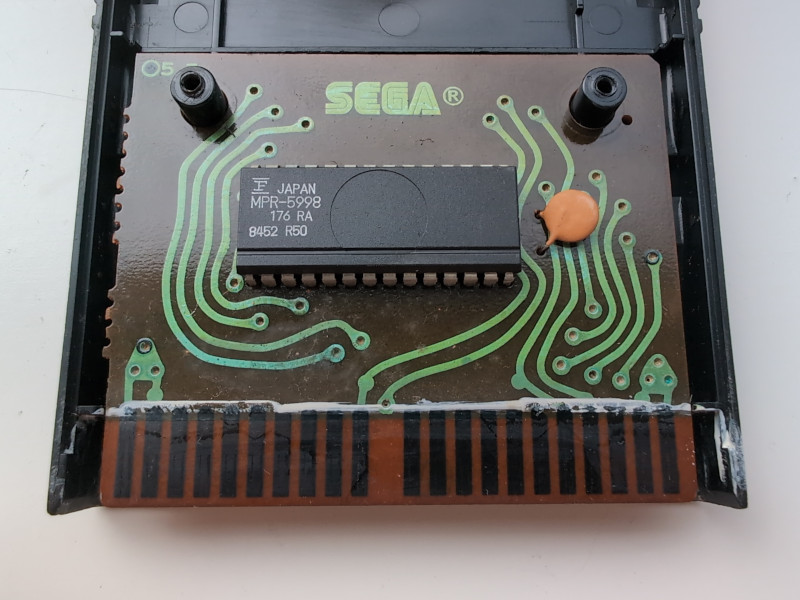
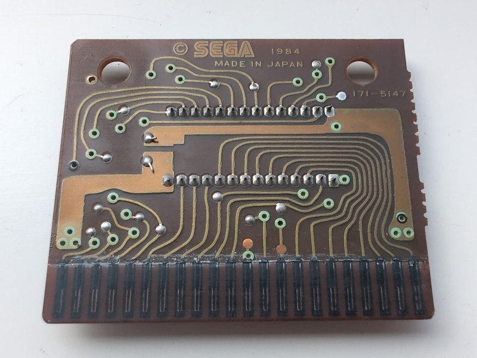
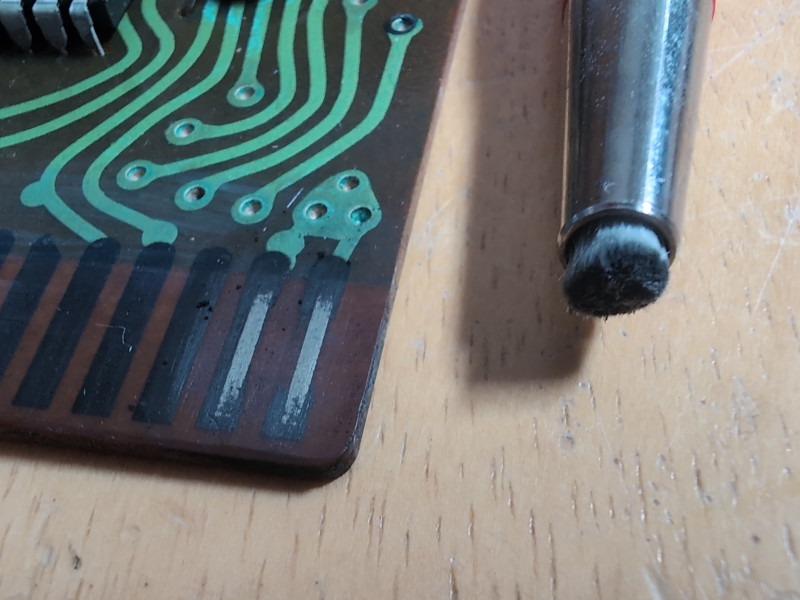
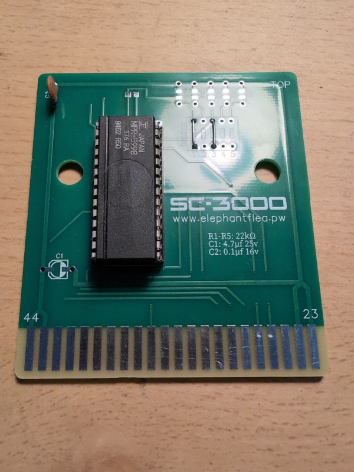

Sega SG-1000 Corroded Cartridge
I bought a Lode Runner cartridge for the Sega SG-1000 while on a trip to Japan. Testing the cartridge back home yielded no results, just a black screen. Looking closer at the edge connector at the cartridge, the pins were completely black. Using isopropyl alcohol or contact cleaner on them would just result in black sot. I am wondering if they used silver plating on the pins, which could cause this?
I needed to open the cartridge for a closer look, there are two screws hidden underneath the label, which is best removed by using hot air at a low temperature and a thin blade:

On the front of the PCB, I think the green is actually oxidized copper:

The back of the PCB also looks pretty bad:

I tried removing the black layer on the pins with a fiberglass pen but it seems almost all of it is eaten away:

Looking like a lost cause, I ended up getting elephantflea's replacement PCB and moving the PROM and disk capacitor over from the original PCB:

The SC-3000 and SG-1000 uses the same cartridge. It was originally made for a 32-pin socket, but also works with a 28-pin socket. Adding wires over DIP switches 1 and 3 gives +5V to pins 1 and 28 on the PROM as needed.